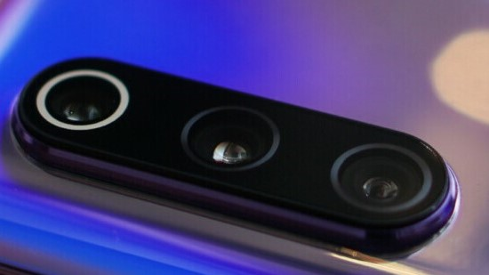

Mengenal Kamera HP Resolusi Terbesar di Dunia, 108 MP
Teknologi | 9 November 2019 | 12:55 WIB
Ponsel dengan sensor kamera yang tinggi saat ini mulai jadi andalan produsen untuk menarik perhatian pasar. Tak lama setelah sensor 64 Megapiksel (MP), kini muncul pula kamera dengan sensor 108 MP.
Untuk menghadirkan kamera dengan megapiksel besar, dibutuhkan sensor yang dapat mendukung kamera tersebut. Samsung ISOCELL Bright HMX merupakan yang pertama dan masih satu-satunya sensor yang mendukung kamera 108 MP.
Sensor buatan Samsung ini menggunakan teknologi Tetracell. Piksel dibuat menjadi empat kesatuan besar yang masing-masing berfungsi untuk mendeteksi cahaya merah, biru, dan hijau.
Keempat piksel tersebut kemudian yang menghasilkan gambar 27 MP pada cahaya yang sedikit. Tetracell ini lah yang membuat sensor dapat meniru sensor yang lebih besar.
Jika lingkungan didukung dengan cahaya yang optimal, kamera mampu menghasilkan gambar 108 MP. "Algoritma remosaik membuat foto 108Mp lebih detail di siang hari," tulis Samsung.
Selain Tetracell, HMX juga didukung dengan teknologi Smart-ISO yang mampu menghasilkan gambar-gambar yang terang dalam ISO yang rendah. Menggunakan ISO tinggi juga bisa membantu mengurangi noise pada hasil gambar.
Dilansir dari BBC, sensor kamera yang besar menghasilkan gambar beresolusi besar yang harus diproses oleh sensor yang sangat kecil.
Kondisi tersebut bisa menyebabkan resiko crosstalk, yakni gangguan yang disebabkan aliran listrik karena jarak komponen yang berdekatan. Hal ini bisa menyebabkan hasil gambar yang noise.
Namun Samsung mengatasinya dengan membuat ukuran sensor yang lebih besar dari sensor pada umumnya. Dengan ukuran 1/1,33 inci, Bright HMX dapat menyerap lebih banyak cahaya walau dalam kondisi dengan pencahayaan yang buruk.